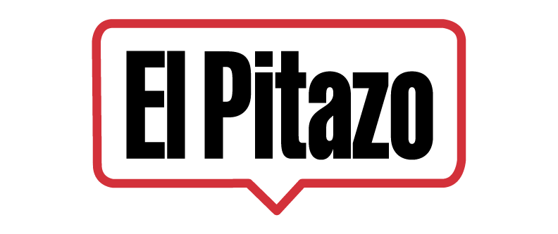
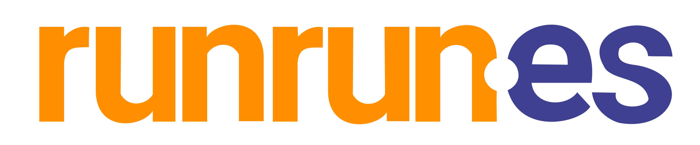
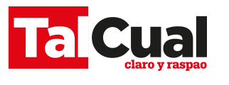
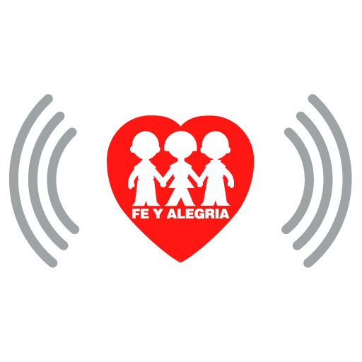
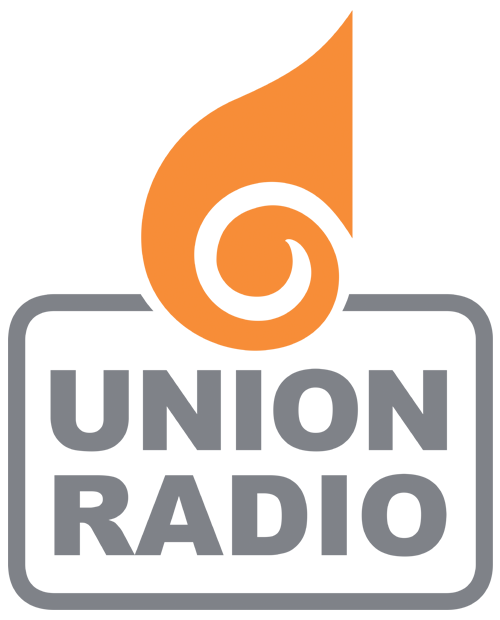
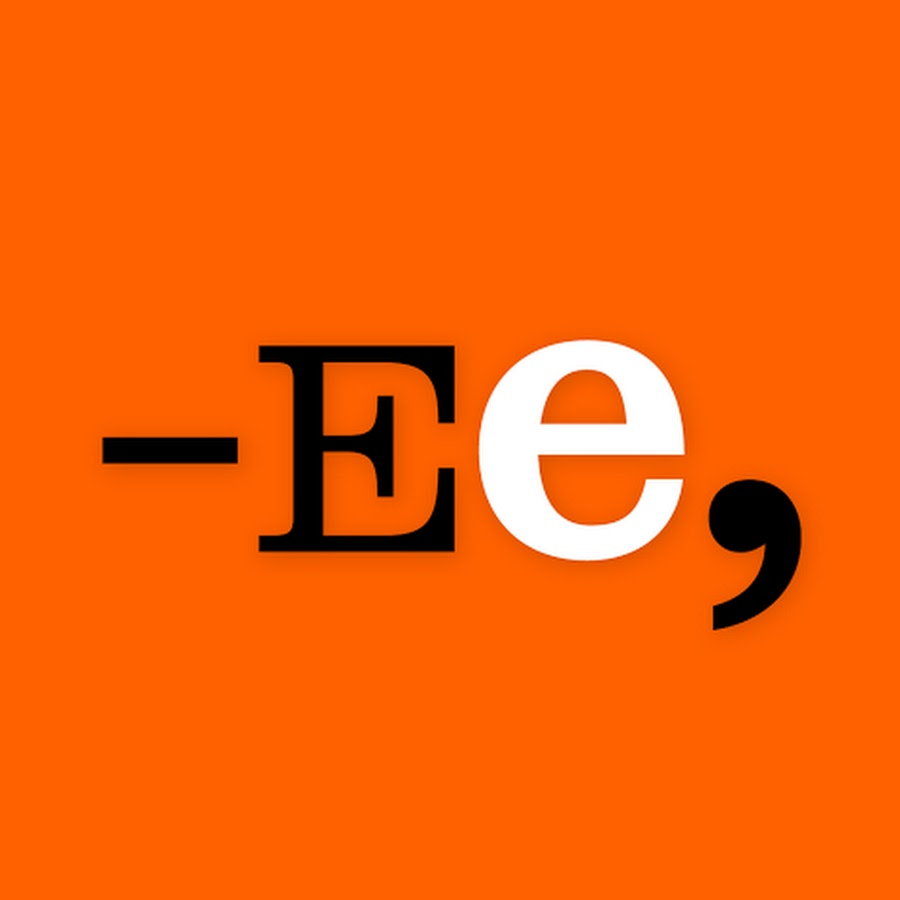
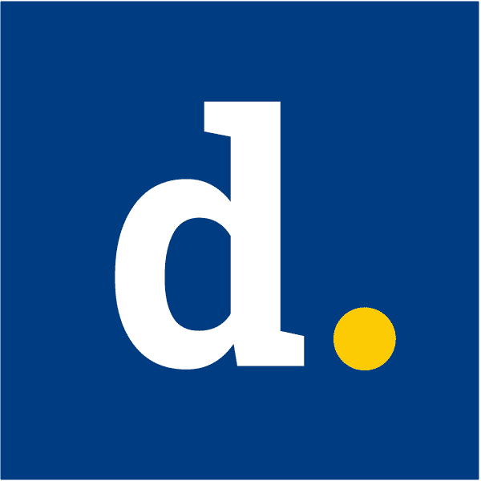
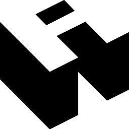

Nelsis Bustamante
@Nelsisabcdev
Sorteando las dificultades económicas, la censura y los ataques del poder
Estos son los medios independientes que mantienen vivo el periodismo de investigación en Venezuela.
9 medios principales

El Pitazo

Runrunes

TalCual

Radio Fe y Alegría

Unión Radio

Efecto Cocuyo

El Estímulo

El Diario

Armando.Info